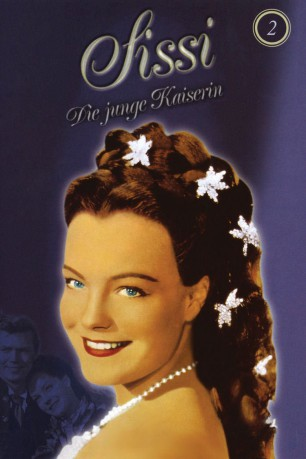

#4179 Sissi 2 - die junge Kaiserin
 
 IMDB-Wertung: 6.6 / 10
IMDB-Wertung: 6.6 / 10  Metascore: 0
Metascore: 0 
Nach der glanzvollen Hochzeit des jungen österreichischen KaisersFranz Joseph und der bayerischen Prinzessin Elisabeth legt die Mutter des Monarchen nach wie vor größten Wert auf die Einhaltung des strengen Hofzeremoniells. Dies führt zu wachsenden Spannungen zwischen Sissi und ihrer Schwiegermutter. Als Sissi einer kleinen Prinzessin das Leben schenkt, beschließt Erzherzogin Sophie das Kind selbst zu erziehen. Franz Joseph erklärt sich einverstanden und verzweifelt sucht Sissi Zuflucht bei ihren Eltern. Vom Kaiser liebevoll nach Wien zurückgeholt, gewinnt Sissi zwar den Kampf um ihre Tochter, erkennt jedoch angesichts der gespannten politischen Lage mit Ungarn, dass ihre persönlichen Wünsche hinter den Geschicken des Landes zurückstehen müssen. In einem Triumphzug fahren Franz Joseph und Sissi nach Budapest.
Jahr: 1956
Dauer: 105 Minuten
FSK: 6
Land: Österreich Studio: Herzog-FilmverleihTonspuren:
Untertitel:
Auflösung: 1080p (1920x1080) Größe: 10547 MB
Genre: Drama, Geschichte
Regisseur: Ernst Marischka
Drehbuch: Torsten Wenzel
Soundtrack:
Darsteller:
 Romy Schneider als Sissi
Romy Schneider als Sissi Karlheinz Böhm als Kaiser Franz Josef
Karlheinz Böhm als Kaiser Franz Josef- Magda Schneider als Vickie
 Gustav Knuth als Duke Max of Bavaria
Gustav Knuth als Duke Max of Bavaria- Walther Reyer als Count Andrassy
- Iván Petrovich als Dr. Max Falk
- Vilma Degischer als Archduchess Sophie, Franz Josef's mother
- Senta Wengraf als Gräfin Bellegarde
- Josef Meinrad als Major Böckl
- Helene Lauterböck als Gräfin Esterhazy
- Erich Nikowitz als Erzherzog Franz-Karl
- Richard Eybner als Postmeister
- Hans Ziegler als Dr. Seeburger
- Franz Böheim als
- Karl Fochler als Graf Grünne
- Max Brebeck als
- Egon von Jordan als Prime Minister
- Hilde Wagener als
- Joseph Egger als Ceremony Master Nepalek
- Otto Treßler als Radetzky
Datei: X:\3-Trilogie(N-Z)\Sissi\Sissi 2 - die junge Kaiserin (1956, FSK6, 1920x1080).mkv seit 28.07.2016
Festplatte: HD Collection-3(N-Z)-6(A-Z)
 Alle Filme aus Gruppe '3-Trilogie(N-Z)\Sissi'
Alle Filme aus Gruppe '3-Trilogie(N-Z)\Sissi'